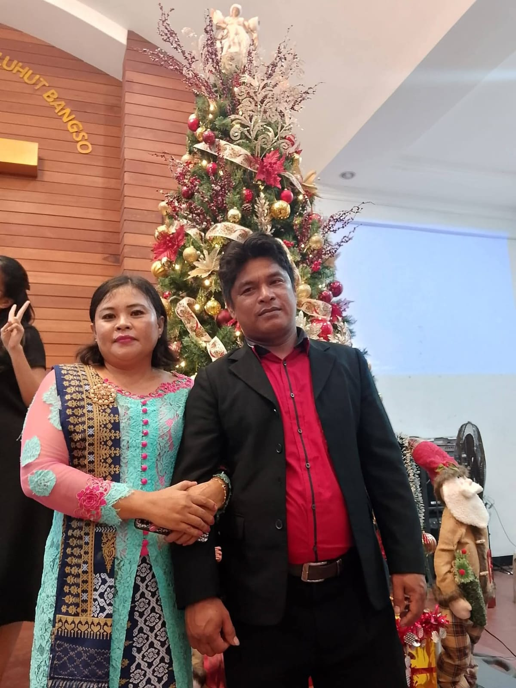
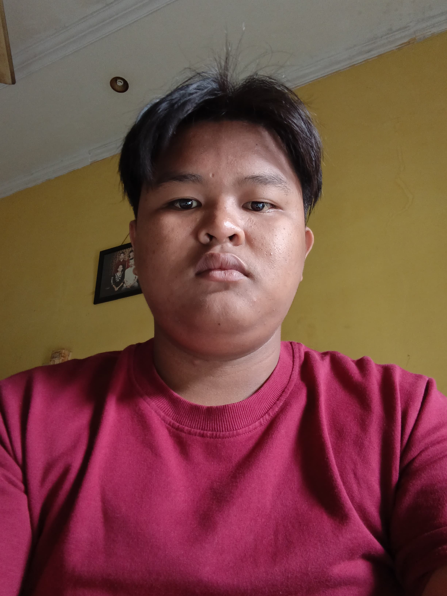
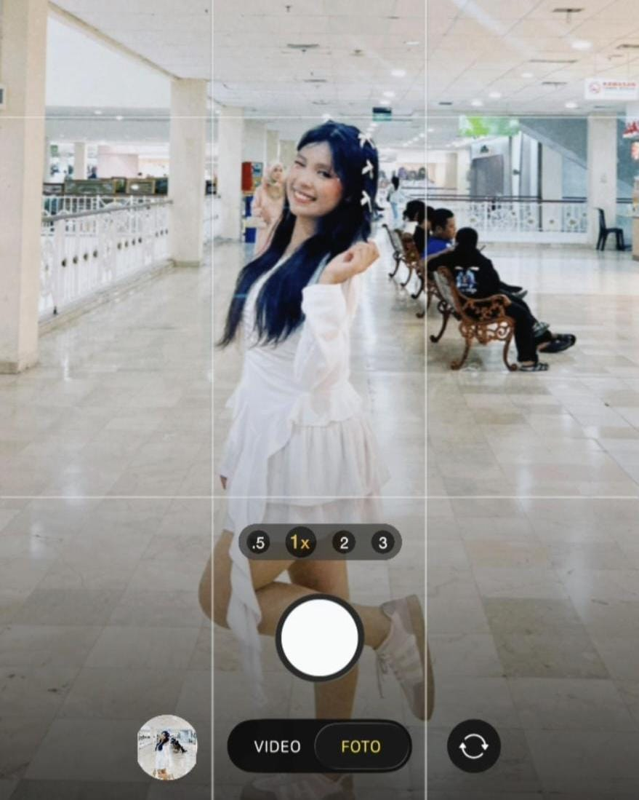
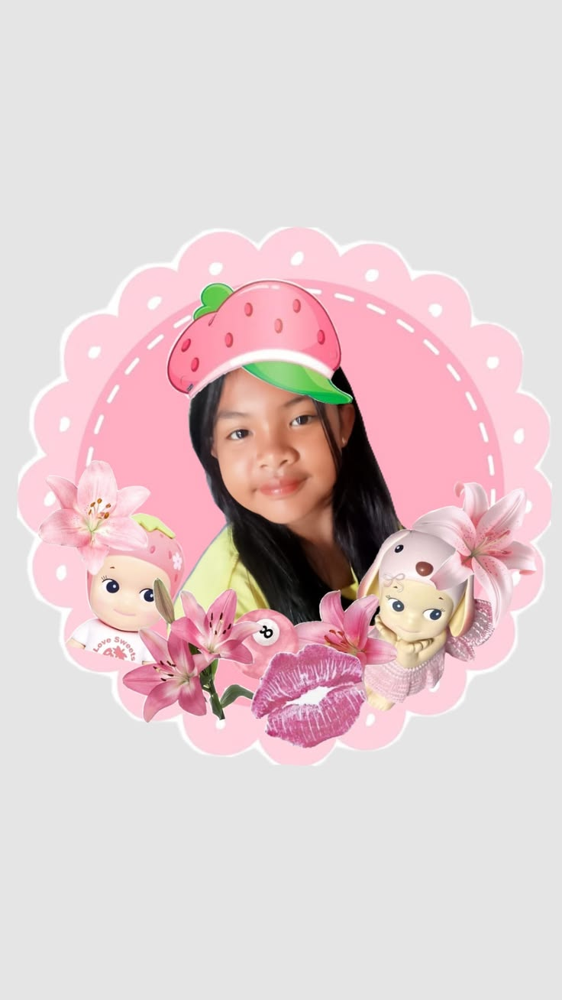
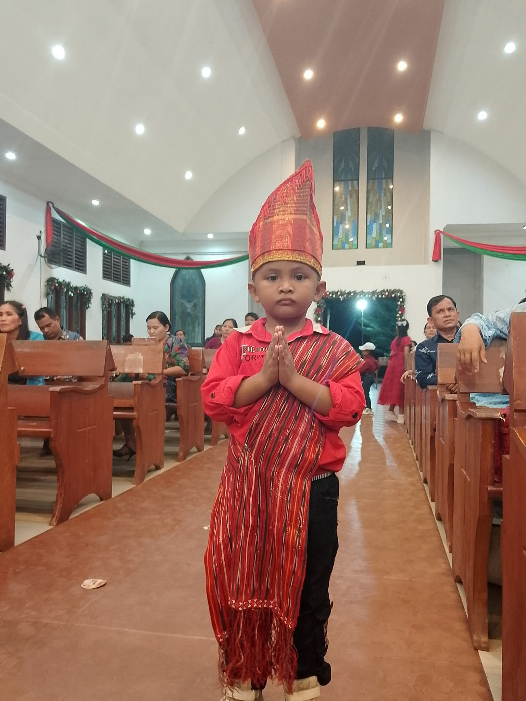

わたしのかぞく — Keluargaku
Selamat datang di website keluarga saya.
Watashi wa kazoku ga daisuki desu ♡
Saya sangat menyayangi keluarga saya.
Lihat Keluargaku ♡Perkenalan Anggota Keluarga

Chichi to Haha
Ayah dan Ibu

Ani
Kakak laki-laki

Watashi
Saya

Imouto
Adik perempuan

Otouto
Adik laki-laki
Kore wa watashi no kazoku desu.
Watashi no kazoku wa roku nin desu.
Watashi to chichi to haha to ani to imouto to otouto desu.
Watashi wa yonin kyoudai desu.
Ani to imouto to otouto desu.
Watashi wa mannaka desu.
これは わたしの かぞくです。
わたしの かぞくは ろくにんです。
わたしと ちちと ははと あにと いもうとと おとうとです。
わたしは よにん きょうだいです。
あにと わたしと いもうとと おとうとです。
わたしは まんなかです。
Ini adalah keluarga saya.
Keluarga saya terdiri dari enam orang.
Yaitu saya, ayah, ibu, kakak laki-laki, adik perempuan, dan adik laki-laki.
Saya bersaudara empat orang.
Yaitu kakak laki-laki, saya, adik perempuan, dan adik laki-laki.
Saya adalah anak tengah.